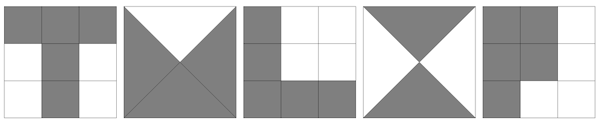

Solution: Reencode
Answer: TULIP
Written by Ben Yang
The puzzle as given is five columns, each with several groups of letters in formation. The title is meant to be read as an instruction. While many puzzles require solvers to decode non-letters into letters, this puzzle instead has us reencode letters into non-letters.
Trying out common puzzlehunt encodings, we find that semaphore gives promising results with the placement of the letters. Each given grouping of letters in the puzzle, when replaced with its flag semaphore representation, draws out a letter. For example, the two side-by-side U’s (fittingly) form a W.
The resulting columns are:
| 1 | 2 | 3 | 4 | 5 |
|---|---|---|---|---|
| ABCEH | TUV | ADGHI | WZ | JKMNP |
The next step is more complicated, as it is not a direct substitution with symbols. We notice that these sets of letters are alphabetical, and seem to come from segments of the alphabet (with the ~A to ~I segment repeated). Again considering common puzzlehunt encodings, we find that these segements match nicely with the way that the pigpen cipher splits the alphabet into A–I, J–R, S–V, and W–Z.
We need to utilize the derivation of the pigpen cipher, rather than just the resulting symbols. For each of the letter sequences, we choose the corresponding piece of the pigpen cipher, and shade in the letters that exist in the sequence. We get the following:

Reading out the letters we see here gives us TULIP, our final answer.
Author’s Notes
This was an idea that first debuted at the internal GPH “puzzle potluck” in 2019. The puzzle was written in January of 2020, then shelved (due to Mystery Hunt 2021) until now.
The inspiration behind this puzzle was the idea of "going too far". Specifically, we imagine the given puzzle to be the result of an overzealous fellow solver continuing to decode past the correct conclusion. Thus, it is up to us to reencode back to the answer.